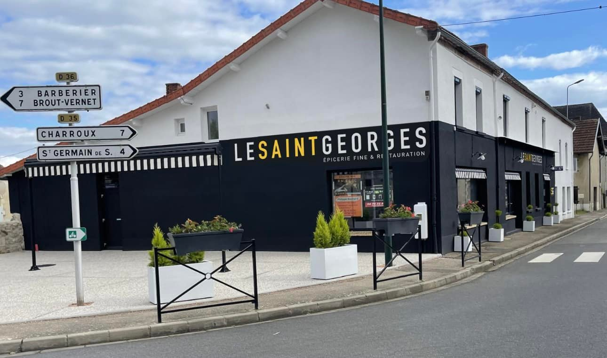
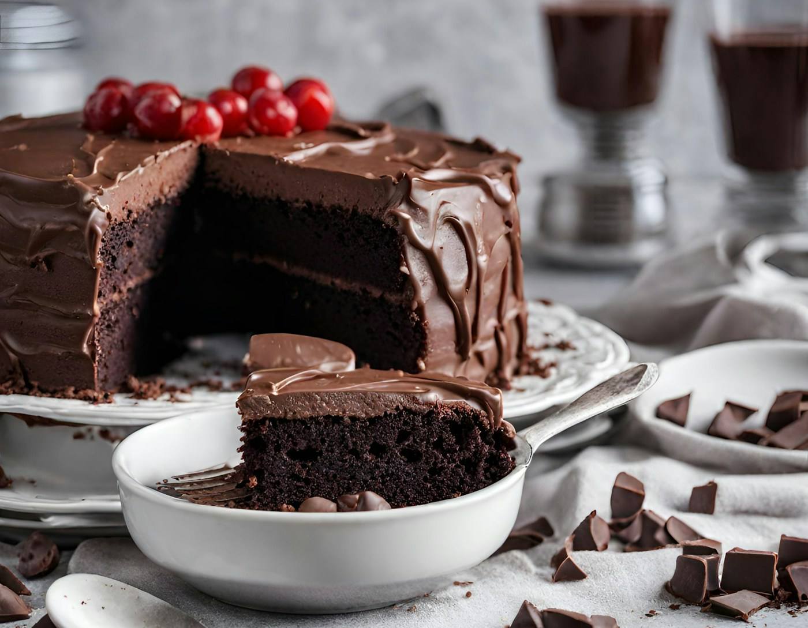
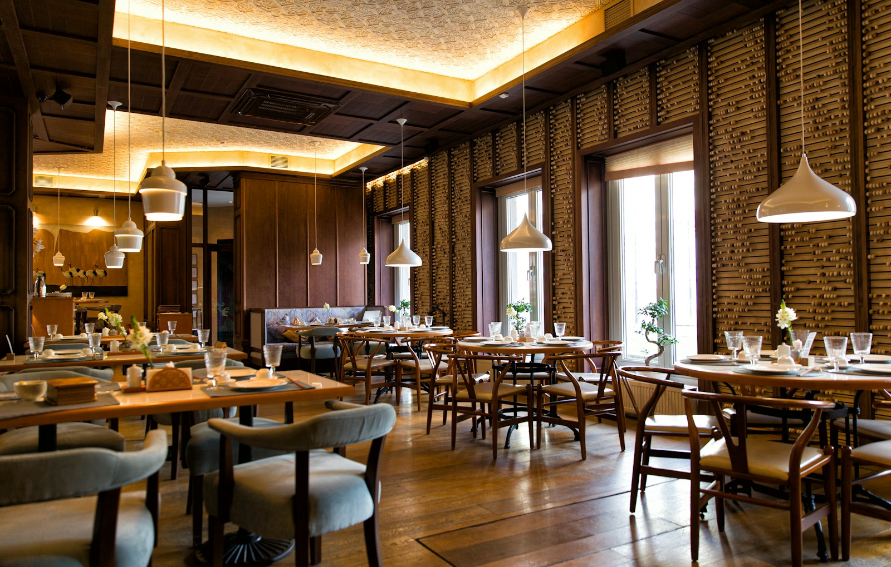
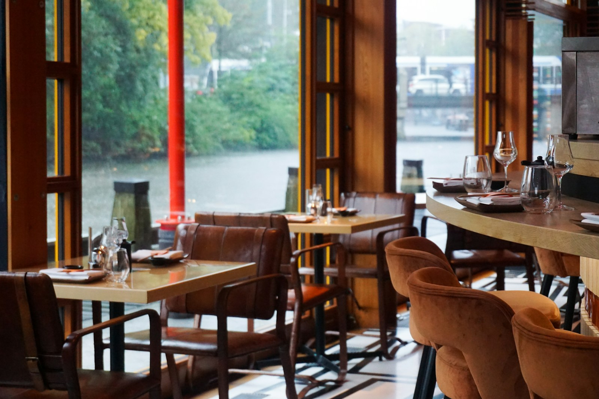
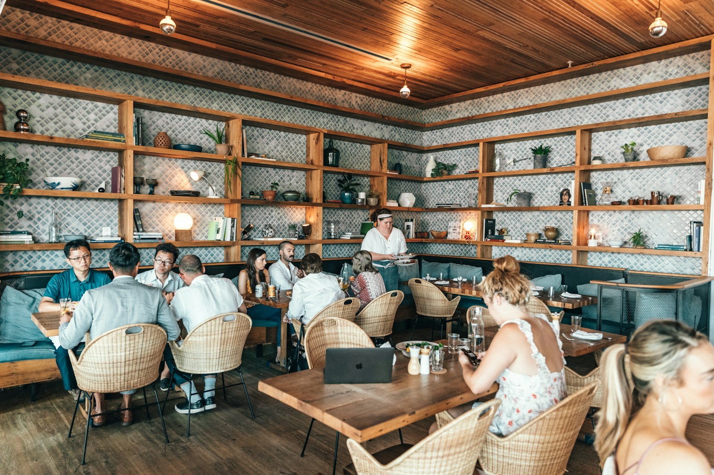

Cuisine traditionnelle
Pour prendre le temps d’un repas et se retrouver autour de la table.

BAR & RESTAURANT À ÉTROUSSAT
Un bon repas.
Un verre. Un bon moment.
Cuisine traditionnelle, petite restauration et bar.
Bienvenue chez nous, à Étroussat.
LE RESTAURANT
Une cuisine traditionnelle, de la petite restauration et un bar : Le ST Georges, c’est un lieu où l’on vient aussi bien manger que se retrouver.
En famille, entre amis ou simplement de passage à Étroussat, prenez le temps de vous installer. Ici, on aime les choses simples et les bons moments partagés.
Voir les photos ↗Pour prendre le temps d’un repas et se retrouver autour de la table.
Pour faire une pause, discuter et profiter d’un moment entre amis.
Pour manger un morceau. Renseignez-vous sur les propositions du moment.
LE ST Georges EN IMAGES
Le lieu, les assiettes, les moments à partager.





La façade est celle du ST Georges. Les autres photos sont des illustrations à remplacer.
01 — 06ADRESSE, CONTACT & HORAIRES
Pour manger un morceau
ou passer un moment au bar.
Étroussat
Allier, France
Adresse exacte à confirmer.
Nous situer ↗XX XX XX XX XX
Numéro à renseigner.
Réservations par téléphone à venir.
VENIR AU ST Georges
Allier, France
Carte centrée sur le village.BAR · RESTAURANT · PETITE RESTAURATION
Pour un repas ou un verre,
on se retrouve au ST Georges.